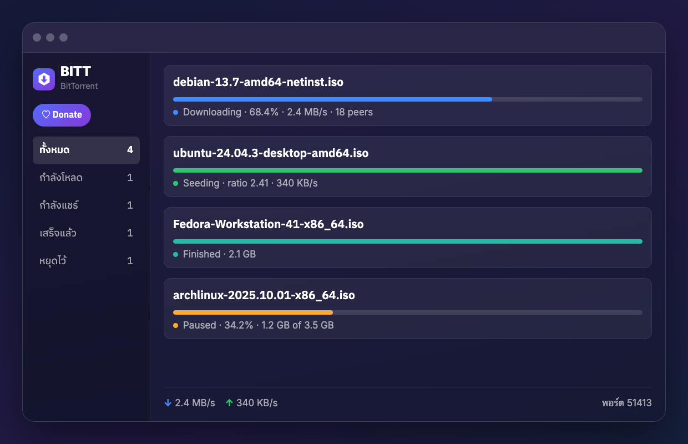

ไฟล์เดียว 3.5 MB อยู่บนเมนูบาร์ ปิดหน้าต่างแล้วยัง seed ต่อให้เงียบๆ เขียนด้วย Swift ล้วน ไม่มี dependency ของใครเลยสักตัว
ทุกข้อเป็นสิ่งที่แอปทำได้จริงวันนี้ ไม่ใช่สิ่งที่วางแผนไว้
ดับเบิลคลิกไฟล์ วางลิงก์ หรือใส่ URL ที่ชี้ไปหา .torrent ก็ได้ ถ้าเป็น magnet จะไปถาม peer ว่าข้างในมีไฟล์อะไรบ้าง
ปิดหน้าต่างไปเลย มันยัง seed ให้อยู่เบื้องหลัง คลิกไอคอนบนเมนูบาร์ดูสถานะได้ตลอดเวลา
ชิ้นไหนพังโหลดใหม่ให้เอง ปิดแอปแล้วเปิดใหม่ก็ไล่เช็กของเดิมบนดิสก์ต่อได้ ไม่ต้องพึ่งไฟล์สถานะแยก
แชร์เพดานร่วมกันทุก torrent จะได้ไม่แย่งเน็ตคนอื่นในบ้าน
นับยอดที่แชร์ออกไปจริงๆ ไม่รีเซ็ตทุกครั้งที่เปิดแอปใหม่ เอาไว้ดูยอดของตัวเองบนเว็บที่ใช้อยู่
ลอง NAT-PMP ก่อน ไม่ได้ค่อยลอง UPnP และถ้าเราเตอร์ไม่ยอมก็บอกตรงๆ ไม่ขึ้นไฟเขียวหลอก
ไม่ต้องลง Java ไม่ต้องลง runtime อะไรทั้งนั้น ลากใส่ Applications จบ
ต่ำกว่านั้นใช้วัสดุเดิมของระบบ ไม่พังและไม่หน้าตาแปลก
BITT ทำมาเพื่อสถานการณ์เดียว คือคุณมีเว็บที่โหลดอยู่แล้ว เอา .torrent หรือ magnet จากเว็บมาโยนใส่ แล้วอยากให้มันโหลดจบๆ
เราเลย ไม่ใส่ DHT (BEP 5) และ PEX (BEP 11) ซึ่งเป็นการตัดสินใจ ไม่ใช่ทำไม่ทัน:
private ไว้ การเอาไปประกาศลง DHT เป็นทางลัดไปสู่การโดนแบนไอดีแลกกับข้อเดียว: magnet เปล่าที่มีแต่ xt=urn:btih:… ไม่มี &tr= ติดมา จะใช้ไม่ได้ ซึ่งแอปจะบอกตั้งแต่ตอนกดเพิ่ม ไม่ปล่อยให้ค้างอยู่ที่ 0% ให้งง
รายการอยู่ซ้าย สถานะเป็นสีเดียวกันทั้งแอป เขียวคือกำลังแชร์ ฟ้าคือกำลังโหลด ส้มคือหยุดไว้
ภาพจำลองหน้าตาแอป ใช้ ISO สาธารณะเป็นตัวอย่าง
